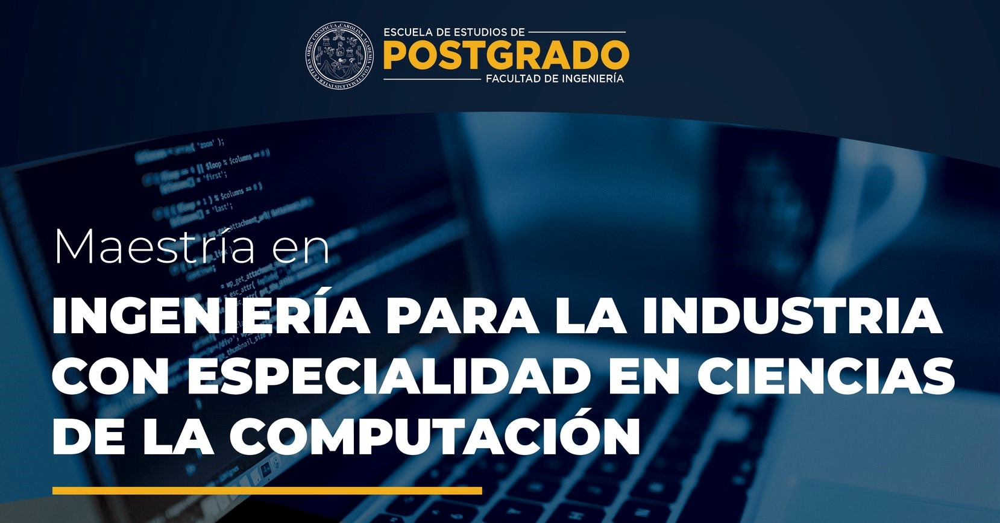

Artículo 10 Evolución de las Pruebas de Conocimientos Básicos de la presencialidad a la virtualidad en época de pandemia
La Universidad de San Carlos de Guatemala USAC, desde sus inicios se ha preocupado en lograr una calidad académica abriendo sus puertas como única universidad pública del país, se han realizado diversos esfuerzos en formar a los futuros profesionales del país. La USAC, así como muchas universidades tanto del país como del mundo entero, han tenido que enfrentarse a retos de diversa índole, entre ellos epidemias devastadoras que han impactado en su funcionamiento cotidiano, han logrado sobrevivir y continuar con su misión aún a puertas cerradas.
Ante la emergencia por las condiciones que prevalecen en el país relacionada con el avance y efectos de la pandemia por la que atraviesa el mundo entero, las instituciones educativas se vieron en la necesidad de implementar sistemas no presenciales basados en plataformas digitales para cumplir con el proceso de enseñanza aprendizaje. Por lo que, la educación en línea es una de las actividades que se ha fortalecido durante el confinamiento, las aulas físicas se convirtieron en espacios virtuales, proyectándose a un público disperso geográficamente.
Las estimaciones de UNESCO IESALC, muestran que el cierre temporal afecta aproximadamente a unos 23.4 millones de estudiantes de educación superior y a 1.4 millones de docentes en América Latina y el Caribe, esto representa, aproximadamente, más del 98% de la población de estudiantes y profesores de educación superior de la región.
La USAC ha asumido el reto de implementar la educación en línea, reformulando procesos académicos y administrativos en beneficio de la población estudiantil y sociedad en general, permitiendo que gran parte de la población tenga acceso a la educación. Otro reto asumido por la USAC ha sido implementar el proceso de ingreso en línea. Según el Artículo 28 del Reglamento del SUN, el encargado de realizar las Pruebas de Conocimientos Básicos PCB es el Sistema de Ubicación y Nivelación SUN, el cual desde el año 2000 ha venido realizándolas de forma presencial.
En el año 2020 se implementan las PCB de forma virtual, con la finalidad de evitar aglomeraciones en su aplicación y de esta manera garantizar el proceso de ingreso a los aspirantes que deseen ingresar a la USAC para el ciclo 2021. Se implementó un programa de aplicación de PCB en el cual los aspirantes desde cualquier dispositivo electrónico con conexión a internet (computadora de escritorio, Tablet, laptop, teléfono inteligente, entre otros) tienen acceso a la misma desde cualquier lugar en donde se encuentren.
Las personas han tenido que reorganizar su vida cotidiana para ajustarse al confinamiento, muchas personas desplazadas lejos de sus familias en el extranjero, se han quedado varados esperando a poder regresar a sus países. Con la implementación de las PCB de forma virtual en el año 2020, se logró que muchos aspirantes que se encontraban varados fuera del país tuvieran acceso a realizar las pruebas. Según la UNESCO IESALC, el 17 de marzo de 2020, ya se había llegado a una cifra de 21.7 millones de estudiantes y 1.3 millones de docentes afectados por los cierres temporales.
En la actualidad las TIC´s han revolucionado el mundo, modificando los niveles de comunicación, es por esto, que el SUN haciendo uso de las misma, ha logrado implementar la inscripción, aplicación y entrega de resultados en línea a nivel nacional, es decir, en el campus central y en los Centros Universitarios Departamentales. (Ventura 2021) en su investigación, evidenció que el 92.8% lo que equivale a 4,798 aspirantes de los encuestados, consideran que la implementación del proceso de ingreso en modalidad virtual ha sido de beneficio, mientras que el 7.2% considera lo contrario.
Los beneficios que han obtenido los aspirantes a ingresar a la USAC con la implementación de las PCB en línea, han sido diversos, pudiendo mencionar entre ellos, ahorro de tiempo y recursos en la movilización física, no estar expuesto al contagio de COVID-19, poder realizar las pruebas desde cualquier lugar en donde se encuentren por medio de un dispositivo electrónico con conexión a internet, apoyo en sus trabajos relacionado a permisos para realizar las pruebas, entre otros.
10.1 Conclusiones
A pesar que la pandemia ha impactado de forma totalmente abrupta, la USAC ha sabido enfrentar todos los retos logrando implementar sistemas no presenciales basados en plataformas digitales para cumplir con el proceso de enseñanza aprendizaje, aunado a esto, ha logrado romper con las barreras culturales implementando el proceso de ingreso en línea. Muchos aspirantes que se quedaron varados en el extranjero o incluso dentro del mismo país, imposibilitados a regresar a sus hogares debido al cierre de aeropuertos y fronteras, tuvieron la oportunidad de realizar sus PCB, a través de los programas de aplicación que la USAC puso a su disposición con tan solo disponer de un dispositivo electrónico con conexión a internet.
Muchos han sido los beneficios logrados con la implementación de plataformas digitales, es difícil predecir cuando terminará la actual pandemia, los efectos que ha causado han sido grandes y han dejado huella en la vida de muchos, es necesario contar con un plan de contingencia y trazar líneas fundamentales de salida ante nuevas crisis que se puedan presentar.
Referencias
[1] [UNESCO IESALC][Covid-19 y educación superior: de los efectos inmediatos al día después]. Recuperado de: http://bitly.ws/pHJH. [Último acceso: febrero 2022].
[2] [Universidad de San Carlos de Guatemala][Reglamento del Sistema de Ubicación y Nivelación SUN]. [Último acceso: febrero 2022].
[3] [Ventura, A][Las TIC´s en la educación: uso de las TIC´s en el proceso de ingreso a la Universidad de San Carlos de Guatemala]. [Último acceso: febrero 2022].
